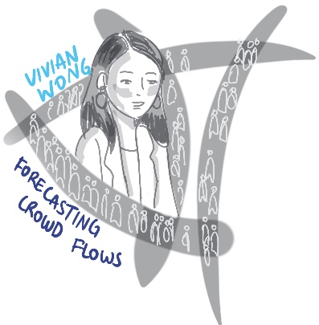
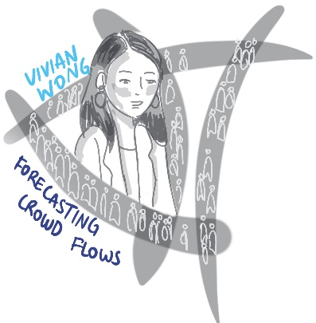

Office: AH446
Credit of the photo goes to Fangze Liu. Credit of the artwork goes to Professor Milene Goncalves.
About
Hi! I am Vivian Wong, an Assistant Professor in the College of Design, Construction and Planning. I have a joint appointment in the Department of Urban Regional Planning (50%) and the Rinker School of Construction Management(50%). I am also a member of UF's larger AI initiative and an affiliate with the Artificial Intelligence and Informatics Research Institute (AIIRI). Previously, I completed my Ph.D. in Civil Engineering from Stanford University, where I was fortunate to be advised by Prof. Kincho Law. I was affiliated with the Engineering Informatics Group and the Stanford Center at the Incheon Global Campus. During my PhD study, I also interned at Amazon Science and Alibaba City Brain as an applied scientist intern and a research scientist intern, respectively. I completed my M.S. from Stanford University from 2017-2019 and my B.S. from University of Illinois at Urbana-Champaign from 2014-2017. My hometown is the lovely city of Toronto, Canada, and I also spent a delightful amount of my childhood in the cities of Hong Kong and Beijing.
I am broadly interested in identifying and addressing real-world motivated problems to assist in the design and management of the spatio-temporal flow of people and resources in our modern urban systems. My projects typically involve some combination of machine learning, problem formulation inspired by practical concerns, and systems implementation.
- Crowding in the Built Environment: crowd sensing; spatio-temporal modeling; graph-based learning -> to understand and predict pedestrian mobility in large public event venues.
- Smart Manufacturing: computer vision; mathematical modeling and simulation for job shop problem; reinforcement learning -> to introduce more automation in smart factories for (1) part quality control and (2) system workflow optimization.
- Disaster Information System: mathematical modeling and simulation for construction -> to optimize construction crew allocation for post-disaster building recovery.
I am also passionate about STEM education, diversity, and outreach. See here for more details.
Undergraduate/MS/rotating PhD students currently in UF and interested in conducting research in our group should email me your CV and interests with the subject "Prospective UF Student Researcher”.
Publications
2025
Q. Yu, V. W. H. Wong, "PyRebuild: A Python-Based Simulator For the Dynamic Post-Earthquake Housing Reconstruction Problem,” ASCE International Conference on Computing in Civil Engineering, New Orleans, LA, May 11-14, 2025.
2024
V. W. H. Wong, "Enhancing Data-Driven Predictive Modeling of Pedestrian Crowd Flow with Spatial Priors – Case Studies with Post-Event Crowd Data on a University Campus," 2024 IEEE International Conference on Big Data (IEEE BigData), Washington, DC, USA, 2024, pp. 6795-6804, doi: 10.1109/BigData62323.2024.10825781.
V. W. H. Wong, Spatio-temporal Representation Learning: Applications to Manufacturing Planning and Pedestrian Crowd Analysis, Ph.D. Thesis, Department of Civil and Environmental Engineering, Stanford University, Stanford, CA, June 2024.
M. M. Sato, V. W. H. Wong, H. Yeung, P. Witherell, and K. H. Law, Identification and Interpretation of Melt Pool Shapes in Laser Powder Bed Fusion with Machine Learning", Smart and Sustainable Manufacturing Systems, Apr. 2024, 8(1): 1-23. https://doi.org/10.1520/SSMS20230035
2023
V. W. H. Wong, S. H. Kim, J. Park, J. Park and K. H. Law, "Generating Dispatching Rules for the Interrupting Swap-Allowed Blocking Job Shop Problem Using Graph Neural Network and Reinforcement Learning", ASME Journal of Manufacturing Science and Engineering, Jan 2024; 146(1): 011009, 2023. https://doi.org/10.1115/1.4063652
M. M. Sato, V. W. H. Wong, K. H. Law, H. Yeung, and P. Witherell, "Explainability of Laser Powder Bed Fusion Melt Pool Classification Using Deep Learning", International Design Engineering Technical Conferences and Computers and Information in Engineering Conference, Boston, MA, Aug. 20-23, 2023. https://doi.org/10.1115/DETC2023-109137.
V. W. H. Wong and K. H. Law, Modeling Crowd Data and Spatial Connectivity as Graphs for Crowd Flow Forecasting in Public Urban Space. ASCE International Conference on Computing in Civil Engineering (i3CE), Corvallis, OR, June 25-28, 2023. https://ascelibrary.org/doi/10.1061/9780784485248.025
V. W. H. Wong, S. H. Kim, J. Park, J. Park and K. H. Law, "Generating Dispatching Rules for the Interrupting Swap-Allowed Blocking Job Shop Problem Using Graph Neural Network and Reinforcement Learning", Manufacturing Science and Engineering Conference (MSEC), New Brunswick, NJ, June 12-16, 2023.
V. W. H. Wong and K. H. Law, Fusion of CCTV Video and Spatial Information for Automated Crowd Congestion Monitoring in Public Urban Spaces. Algorithms, Mar 2023, 16(3):154. https://doi.org/10.3390/a16030154.
2022
M. M. Sato, V. W. H. Wong, K. H. Law, H. Yeung, Z. Yang, B. Lane and P. Witherell, "Anomaly Detection of Laser Powder Bed Fusion Melt Pool Images Using Combined Unsupervised and Supervised Learning Methods", International Design Engineering Technical Conferences and Computers and Information in Engineering Conference, St. Louis, MO, Aug. 14-17 2022.
V. W. H. Wong, M. Ferguson, K. H. Law, Y. T. Lee and P. Witherell, "Segmentation of Additive Manufacturing Defects Using U-Net", ASME Journal of Computing and Information Science in Engineering. June 2022; 22(3): 031005. https://doi.org/10.1115/1.4053078
2021
V. W. H. Wong, M. Ferguson, K. H. Law, Y. T. Lee and P. Witherell, "Segmentation of Additive Manufacturing Defects Using U-Net", 41th Computers and Information in Engineering Conference (CIE). August 17-20, 2021.
2020
V. W. H. Wong, M. Ferguson, K. H. Law, Y. T. Lee and P. Witherell, "Automatic Volumetric Segmentation of Additive Manufacturing Defects with 3D U-Net", AAAI 2020 Spring Symposia, Stanford, CA, USA, Mar 23-25, 2020
2019
V. W. H. Wong, M. Ferguson, K. H. Law and Y. T. Lee, "An Assistive Learning Workflow on Annotating Images for Object Detection", 2019 IEEE International Conference on Big Data (IEEE BigData 2019), Los Angeles, CA, USA, Dec 9-12, 2019
Industry Experience
- Summer 2022: Applied Scientist intern, Amazon's Softlines Discovery. Developed models for evaluating brands.
- Summer 2018: Research intern, Alibaba Cloud's City Brain project.
Teaching and Service
- Fall 2024: Co-instructor for Intro to Planning Information System (URP 4273/6270), UF
- Mean Instructor Eval. Score: 4.61 (section 1-undergrad), 4.57 (section 2-grad).
- Winter 2020, 2022: Teaching assistant for Structural Dynamics (CEE 283), Stanford
- Autumn 2019, 2021, 2022: Teaching assistant for Finite Element Methods in Structural Dynamics (CEE 284), Stanford
- Fall 2016: Instructor for Engineering 100 and served as a peer advisor/mentor to freshmen, UIUC
Awards and Scholarships
- Blume Research Fellowship, Stanford University, 2019
- James Scholar, UIUC, 2014-2017
- Earle J. Wheeler Scholarship, 2016
- Fred S. Bailey International Service Travel Scholarship for Cause-Driven Leaders, 2016
- International Engineering Fellowship, 2016
- Wayne C. Teng Scholarship, 2015
- Dean's List, UIUC, 2014-2015
Outreach
My father's side of the family were Cambodian refugees. Their escape from the turbulent era of the Cambodian civil war taught me the values of perseverance, dedication, and resilience. These lessons have profoundly influenced my worldview and drive my work not just for diversity, equity, and inclusion, but also for social and environmental justice more broadly. I am fortunate to have participated in many awesome groups:- Suspension Bridge Projects in Guatemala and Panama: Cofounded the EIA chapter at UIUC, I spent two memorable summers dedicated to building suspension bridges in underdeveloped communities in Guatemala and Panama. By collaborating with local communities and leveraging engineering expertise, we provided safer and more accessible transportation options, enhancing connectivity and improving the quality of life for residents. We were featured on the UIUC CEE Department news: here.
- Saha Global field representative: Leveraging travel grants, I volunteered for Saha Global, a non-profit organization focused on sustainable development for low-income villages in West Africa. In Ghana, I contributed to the construction of solar-powered phone charging stations, empowering communities with access to reliable energy.
- Society of Women Engineering (SWE): During my undergraduate studies, I dedicated my time and energy to SWE, advocating for gender equality in the engineering field. Recognizing my commitment, I was selected as the Always Connecting representative for the annual conference, where I shared my awesome experience with SWE.
- Shakes and Quakes Outreach at Sangamon Elementary School: Volunteering at Shakes and Quakes, I had the opportunity to engage with young students, fostering their interest in science and engineering. By organizing interactive educational activities using Legos and shake tables, I aimed to inspire the next generation of problem solvers and innovators.
- Stanford Community Associate: At Stanford, I was a Community Associate from 2018-2019. Working with the Graduate Life Office, I coordinated many multicultural, social, educational and fun events during the academic year to foster a sense of community in the Kennedy Graduate Residence.
Students
[Openings]: I am looking for passionate and curious minds to join my lab. An application to either the URP or Construction concentration for DCP Ph.D. can be submitted at DCP Ph.D. Admissions. DCP Ph.D positions are STEM designated degrees and are fully funded through RA and TA for the duration of the studies (~4 years). Prospective students should meet UF DCP PhD admission requirements, and have strong math/stats/programming background and passion for applied AI/ML research in the domain of urban societal systems. I also encourage students to pursue a PhD minor or another MS degree in CS/stats/EE, as well as summer internships in the industry, throughout the duration of the PhD. To express your interest in the open positions before submitting a full application, prospective students are encouraged to fill out this pre-application interest form to list relevant experiences, career objectives, and relevant linkedin/github pages. Afterwards, please email me indicating that you have completed the form, with the subject starting with "Prospective Graduate Student". I HIGHLY RECOMMEND reading my Research Statement and previous publications before emailing me.Current Advisees
- Research Interests: Post-disaster rebuild modeling and simulation, machine learning
- Email: yu.qianchen@ufl.edu